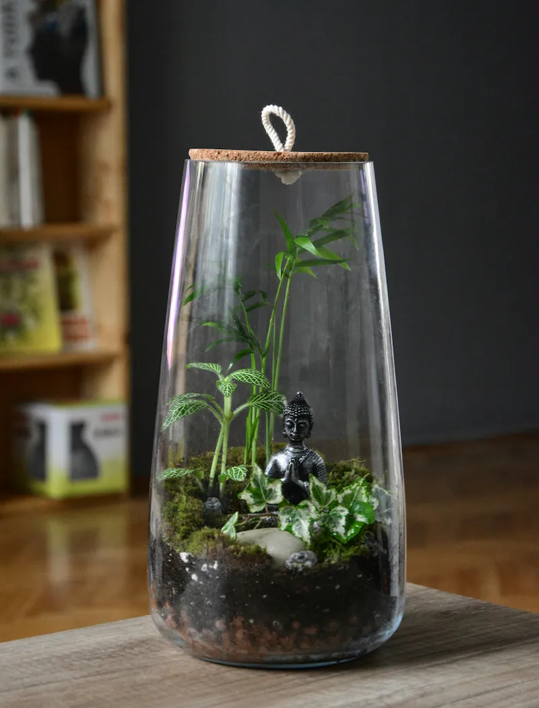
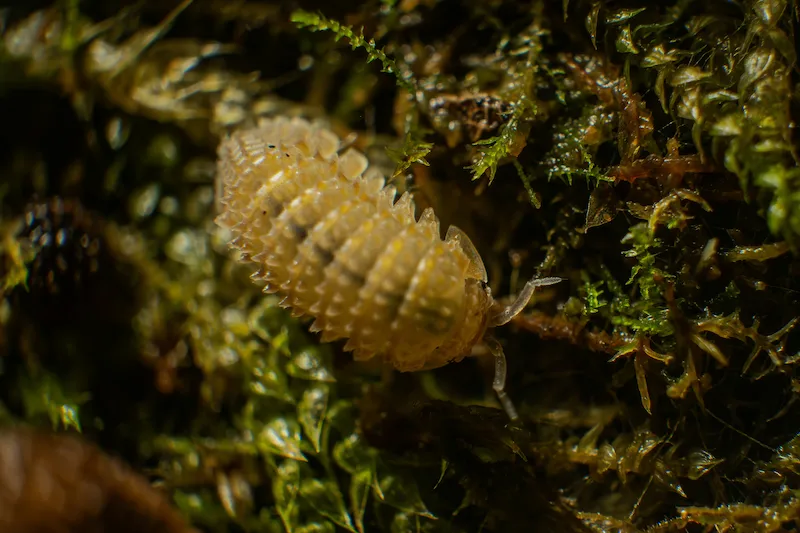
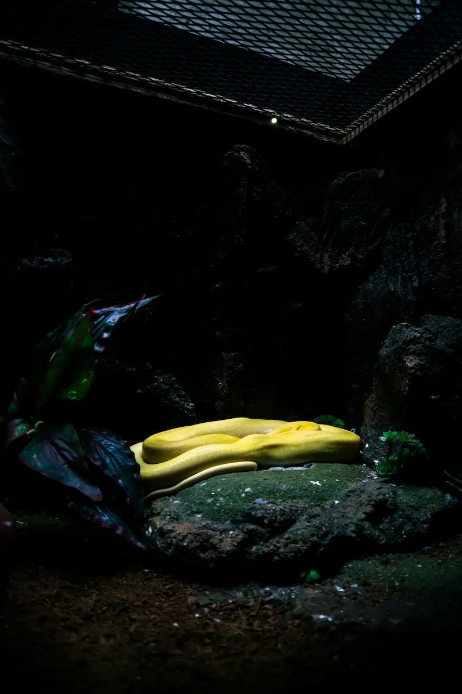

01 / MINIATURE WORLDS
Terrariums
Build miniature landscapes with mosses, tropical plants, natural substrates, and living soil.
Explore TerrariumsROOT & ROOM PRESENTS
Welcome to the wilder side of Root & Room. Discover the hidden world of living soil, tiny creatures, lush terrariums, and planted habitats. From the smallest isopod to an entire miniature ecosystem, there's a whole world waiting beneath the leaves.
Explore Root & RotDISCOVER THE ECOSYSTEM
From miniature forests to the smallest inhabitants of the soil, discover the elements that bring bioactive environments to life.

Build miniature landscapes with mosses, tropical plants, natural substrates, and living soil.
Explore Terrariums
Meet the fascinating cleanup crews that help break down organic matter and support healthy soil ecosystems.
Meet the Cleanup Crew
Create lush planted habitats where animals, plants, and microorganisms coexist.
Explore VivariumsNATURE WORKS TOGETHER
A bioactive environment is more than a collection of plants and tiny creatures. It's a community where every living thing plays a part.
Roots, leaves, and mosses create shelter, absorb nutrients, and bring natural beauty to the environment.
Isopods and springtails help break down decaying organic matter and recycle nutrients through the substrate.
Beneficial microorganisms help decompose organic material, supporting the nutrient cycle beneath the surface.
WHERE CURIOSITY BEGINS
Whether you're drawn to miniature forests, fascinating little creatures, or living habitats, there's a place to begin.
Discover the art of terrarium making. Learn how to choose plants, layer substrates, and create a tiny landscape that thrives inside glass.
Enter the world of isopods and springtails. Explore their habitats, feeding habits, moisture needs, and the important roles they play beneath the soil.
Bring plants, natural materials, and carefully selected cleanup crews together in a habitat designed around the needs of its animal inhabitants.
Begin small. Observe closely. Let curiosity grow.
THERE'S MORE TO DISCOVER
In the soil beneath our plants, under fallen leaves, and within the smallest corners of nature, entire worlds are quietly at work. Sometimes, all it takes is a closer look.
Explore Root & Room